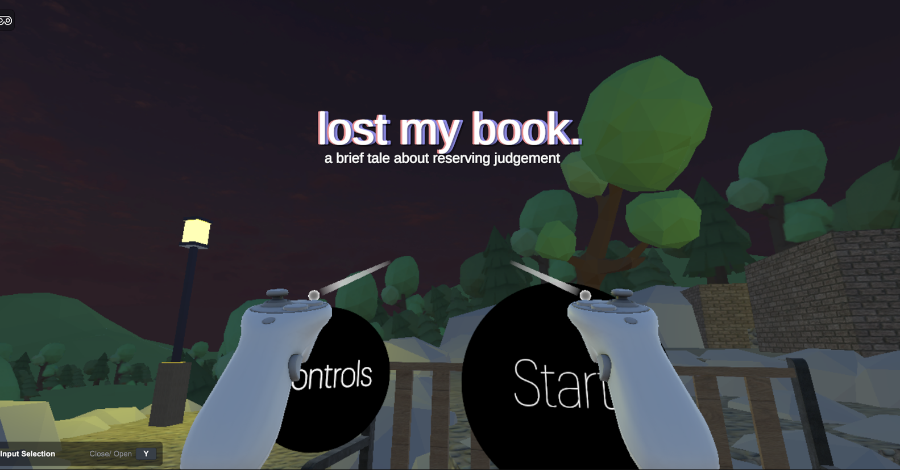
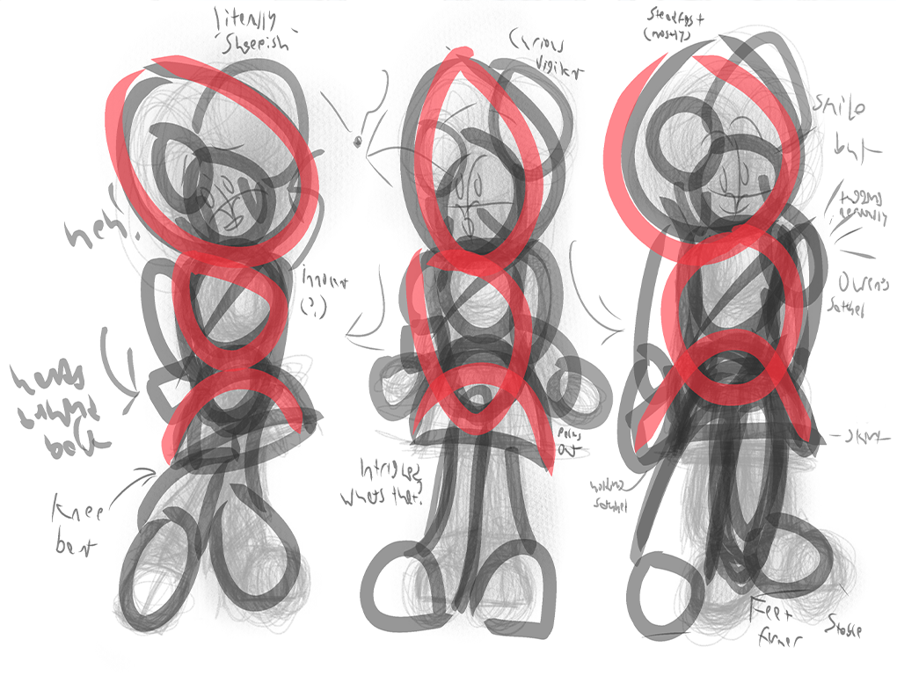
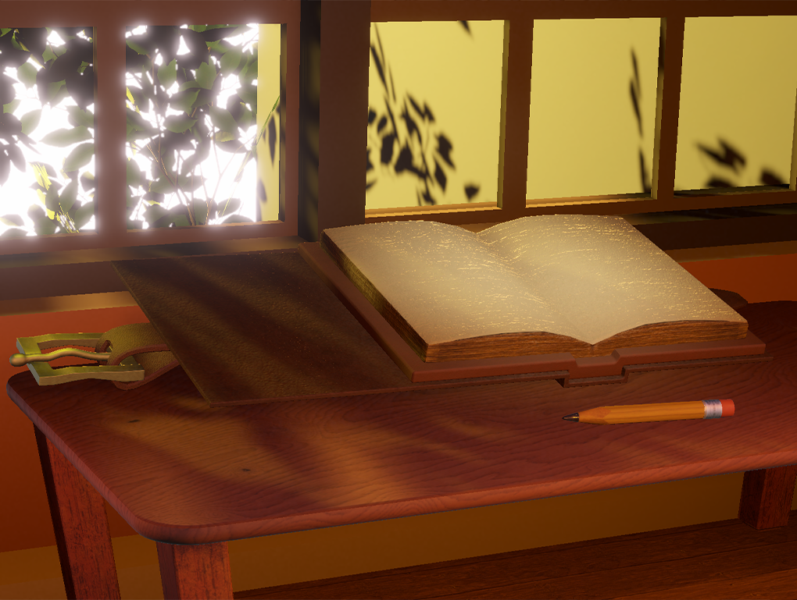
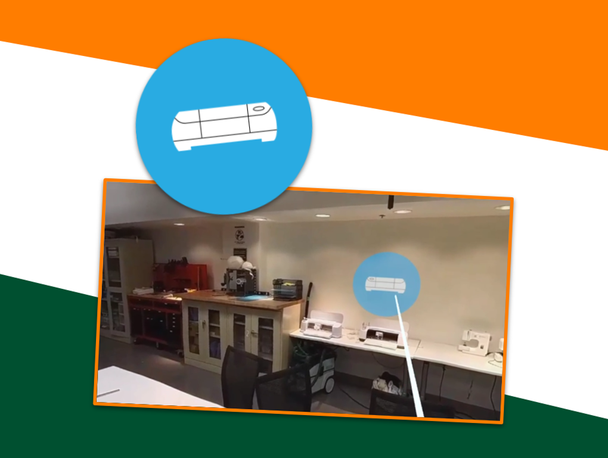
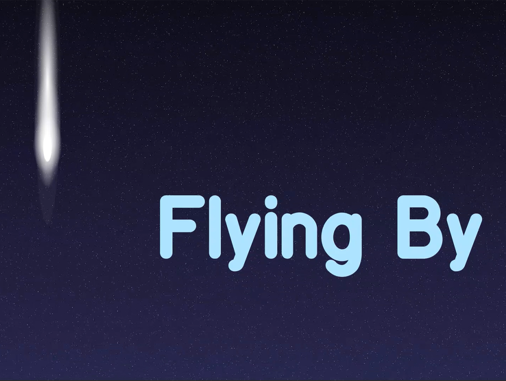

DM's Website
This is my website, coded in conjunction with my studies at the University of Miami as part of both my Front End Fundamentals and Studio / Portfolio courses.
I am diving head first into the world of game design and development, on a mission to communicate engaging and deeply introspective messages through the ever enthralling medium of gaming. Beyond that, I have an affinity for graphic design and web design, and always willing to learn in any field I approach.
This website is a work in progress, to be completed never. It shall be updated as I build my repertoire.
Please, feel free to look around!
WANT TO LEARN MORE ABOUT ME?
My Work

Answer Campus is an interactive visual novel developed by NERDLab as part of their in-house game development initiative, as part of their writing team. It is a game that explores the themes of mental health and the college experience.
Since Spring of 2024, I have helped develop the narrative and dialogue for the game, as well as expanding some of the characters, as part of the writing team. Currently, development is ongoing with a demo build for the first semester edition available via NERDLab's Itch.io page. A second semester edition is also in the works as of 2026.
Included are both my case study for my initial work on Answer Campus during Fall 2024 and Spring 2025, as well as two development logs that detail my process and experiences working on the game's narrative design and dialogue system during the Fall 2025 term when development on the playtest build of Answer Campus: First Semester was underway and development on Answer Campus: Second Semester began.

Lonely Road & Lost My Book were two interactive virtual reality experiences I developed individually as part of my senior year undergraduate studies for my Designing Virtual Worlds course. The projects focused on immersive storytelling and user interaction within virtual environments, with an emphasis on creating a rich and engaging atmosphere.
These were among the first realized game experiences that I had the opportunity to develop from start to finish, allowing me to explore the potential of virtual reality as a medium for storytelling and further my own skills in game design and development. Importantly, it helped build on my prior experience developing 2D games and assets (i.e. Own Goal and Nautilus's Conundrum from my Designing Playful Experiences course), reinforcing the lessons I learned in pushing a workable design out the door rather than immediately getting stuck in the details. It also helped expose me to the various nuances related to transferring my skills and knowledge from 2D to 3D game development.
In lieu of my usual case study format, I have instead provided two links to the original documentation for each project, since as part of my coursework I created detailed documentation on both projects. Lonely Road's documentation will contain a hub page linking to various videos and images showcasing various stages of its development, while Lost My Book's documentation is a straightforward overview of its design and implementation process. I have elected to present these cases as such to allow for a more in-depth exploration of how I often document and track my work!
To explore these projects, click on the buttons above!

Since Summer of 2023, I have been conceptualizing and quite honestly obsessing over what might be my first big game project, involving a cast of walking, talking animals living in a cartoon world that hides deeper, darker secrets beneath its surface. While I had a number of fleeting ideas for other kinds of games before, this was the first time I felt a strong connection to the characters and story I wanted to tell, and so I had endeavored to flesh out this world even prior to the start of my specialized game design and development courses.
In the Spring of 2025, I enrolled in a 2D Character Design course hoping to refine my skills in creating compelling and visually appealing character designs, and learn some of the basic of worldbuilding. This course has been instrumental in helping me understand the principles of character design, including silhouette, color theory, and how to use shapes to communicate things like a characters personality. I have also been able to apply these concepts to my own characters, creating a diverse cast that reflects the themes and tone of my game.
The lessons I learned in this class were invaluable. It is directly because of this course that my designs for my main character, Bo the Sheep, ended up winning the Undergraduate Award for 2D & 3D Art at the 2025 Interactive Media Annual Showcase at the School of Communication at the University of Miami, much to my surprise!

In my final year of undergraduate studies, I had the opportunity to further expand my skillset by learning 3D modeling and texturing using industry-standard software such as Maya and Substance Painter, as well as implementing these models into Unity, as part of my Intro to 3D Design course. I created a trio of assets--a journal, a short pencil, and a table--to showcase my ability to create detailed and visually appealing 3D models from concept to final implementation.
This experience allowed me to gain a deeper understanding of the 3D modeling pipeline, including familiarizing myself with Maya and Substance Painter, as well as learning how to implement these models into Unity. It also afforded me the opportunity to learn several techniques for optimizing 3D assets for real-time rendering, such as limiting polygon count and utilizing efficient UV mapping.

These were my second and third projects for my Designing Playful Experiences course at UM, which were designed and coded in GameSalad. These functional prototypes are among some of my first forays into game design and development.
Own Goal is a game where the player controls a 'goal' and is tasked with making sure the ball does not go past them.
Nautilus's Conundrum is a game where the player is a canine astronaut traversing an interstellar maze using only their head and a webcam.

A Cane's Look at the School of Communication was a collaborative project done in tandem with my Immersive Storytelling course in the Fall of 2024, where I coordinated a team of fellow students at the School of Communication to imagine, ideate, design, and develop a virtual tour of the school itself with the aim of creating a short experience that would be more engaging and insightful for prospective students or applicants than the existing web information available at the time. The project was designed and developed for VR, with a focus on immersing the user within the School of Communication while both informing them of the various locales in the school and providing a sympathetic voice to narrate the experience to better connect with the audience.
The project was developed over the course of the semester, with regular check-ins and feedback sessions to ensure that the final product met the needs of both the school and its prospective students. This included a total overhaul of the project when initial testing and ideation showed the initial scope was too ambitious, whereafter we refined the experience to focus solely on the most essential elements--namely the key locations and features of the School of Communication and their presentation within the VR environment to free up development resources within the limited timeframe provided.
The final project was well-received, with positive feedback from both the School of Communication and users, including those who playtested the experience during the Fall 2024 semester as well as those who experienced it later when the project was showcased at the Miami XR 2025 exposition hosted by the University of Miami. The project not only demonstrated my ability to work collaboratively within a team to deliver a polished and engaging experience under pressure, but also highlighted my skills in project management, user experience design, and immersive storytelling.

Flying By is a short 2D animation project I created as part of my Intro to 2D Animation course in the Fall of 2024, where I was introduced to the fundamentals of animation, including timing, spacing, and other principles such as squash and stretch. Beyond hoping to apply these concepts to my own personal projects within the realm of game design, I had also sought to explore animation itself as a storytelling medium, experimenting with visual language and character performance to convey emotions and narrative without relying on dialogue.
At the time, I had a fascination with birds and their status as the last remaining dinosaurs, a sort of solemn metaphor for perseverance and adaptation in the face of adversity. This inspired me to create a short animation centered around a small bird flying to bring a stick to a new nest after the dinosaur-killing asteroid impact destroys its original home, taking it on a million-year journey through a changing world before finally reaching its destination in the present day.
During the production of Flying By, I was able to expand my skills in character design and animation, with the big challenge being the fact that the main character was a small bird that obviously couldn't mimic human expressions. The majority of the work was done in Adobe After Effects, with all of the assets created in Adobe Illustrator and Photoshop.
Want to contact me? I am available at dxm1623@gmail.com.
Want to connect? Check me out on LinkedIn!